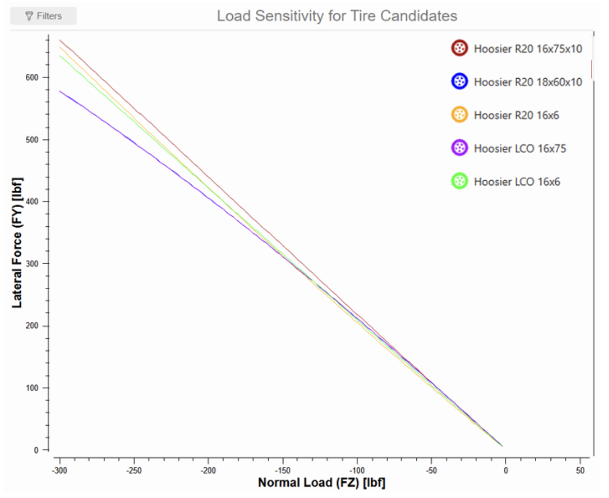
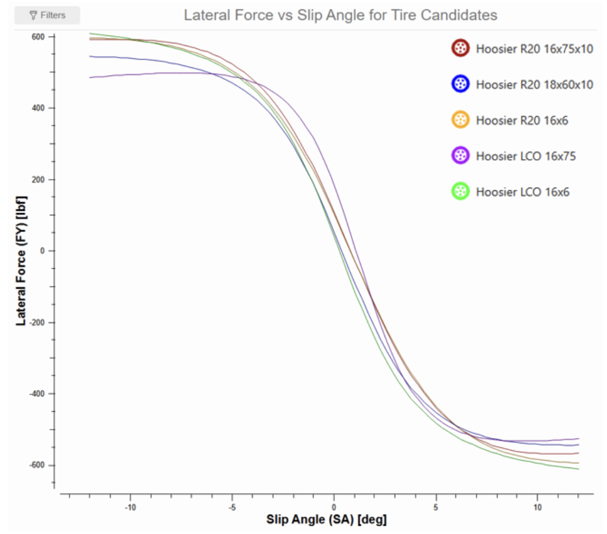
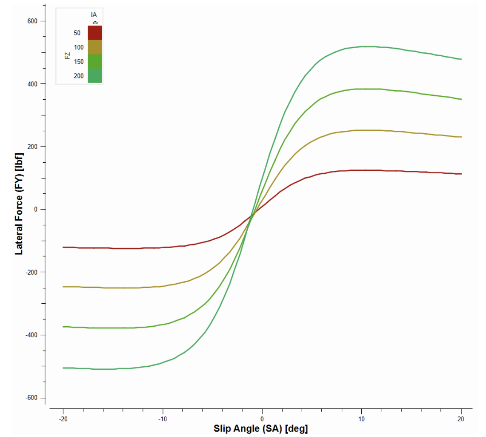
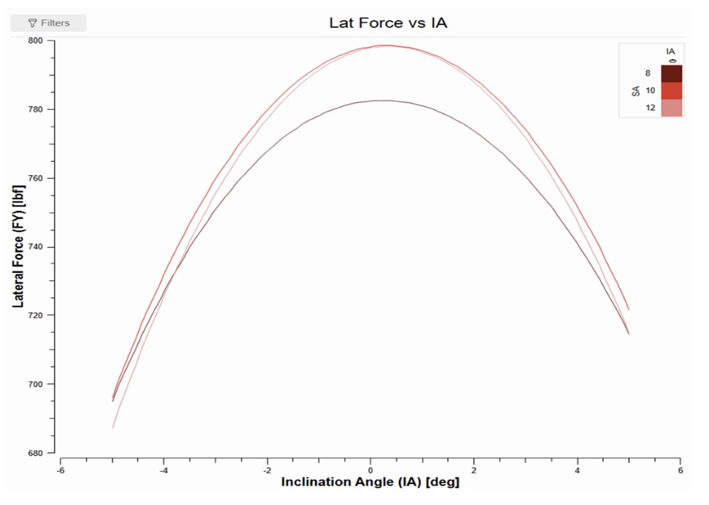

1Data
All plots on this page use run B2356run8.mat from the TTC (Tire Test Consortium) Round 9 data, in the MATLAB format with USCS (US customary) units.
2Plots




Lateral force plots from TTC tire data, comparing Hoosier tire candidates.
All plots on this page use run B2356run8.mat from the TTC (Tire Test Consortium) Round 9 data, in the MATLAB format with USCS (US customary) units.



